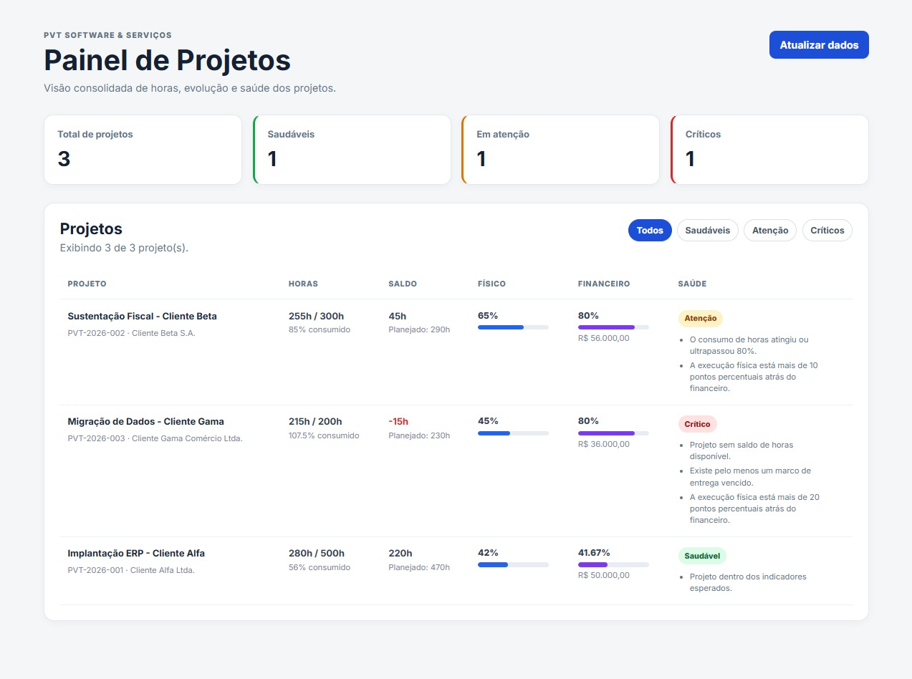

01 / Full Stack / ProductMVP
PVT Project Dashboard
Interface → API → decisão
Dashboard full stack que transforma dados de projetos em indicadores de consumo de horas, avanço e saúde, com regras de negócio centralizadas em uma API TypeScript.
React · TypeScript · Node.js · Express · Prisma · PostgreSQL · Vitest